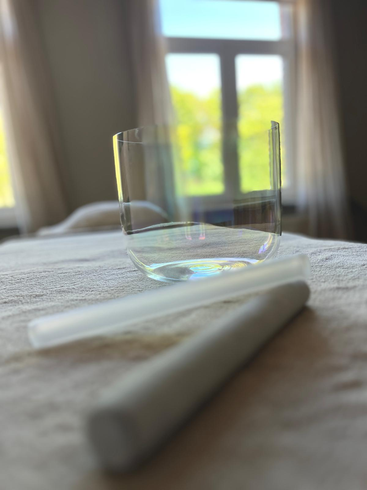
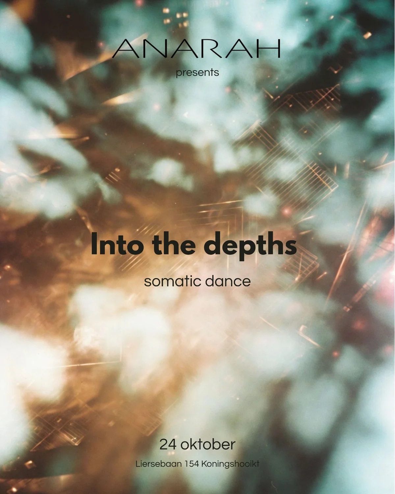
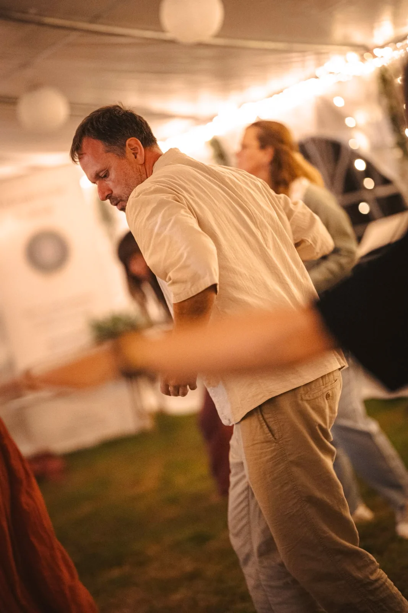
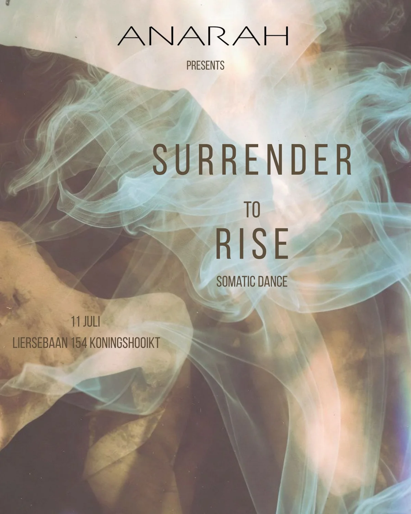
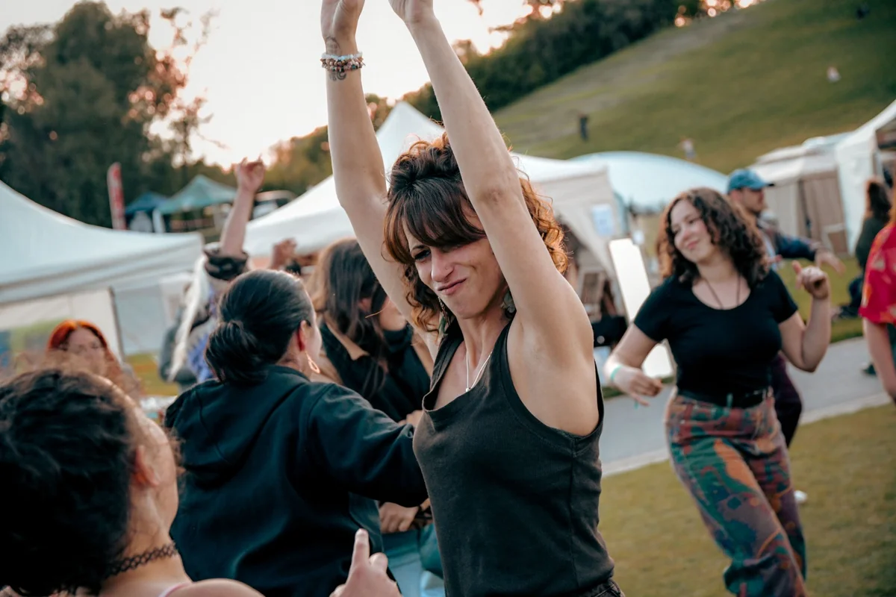
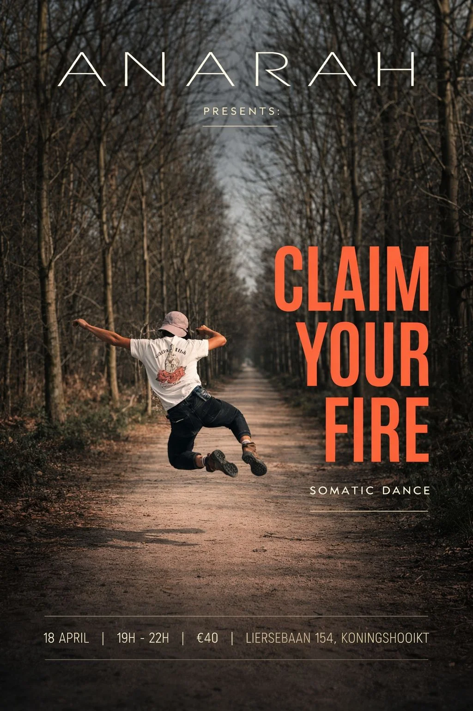
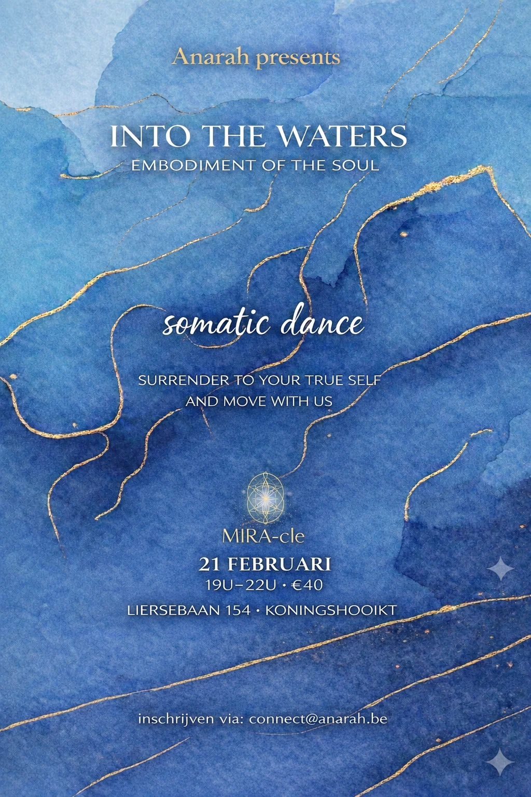
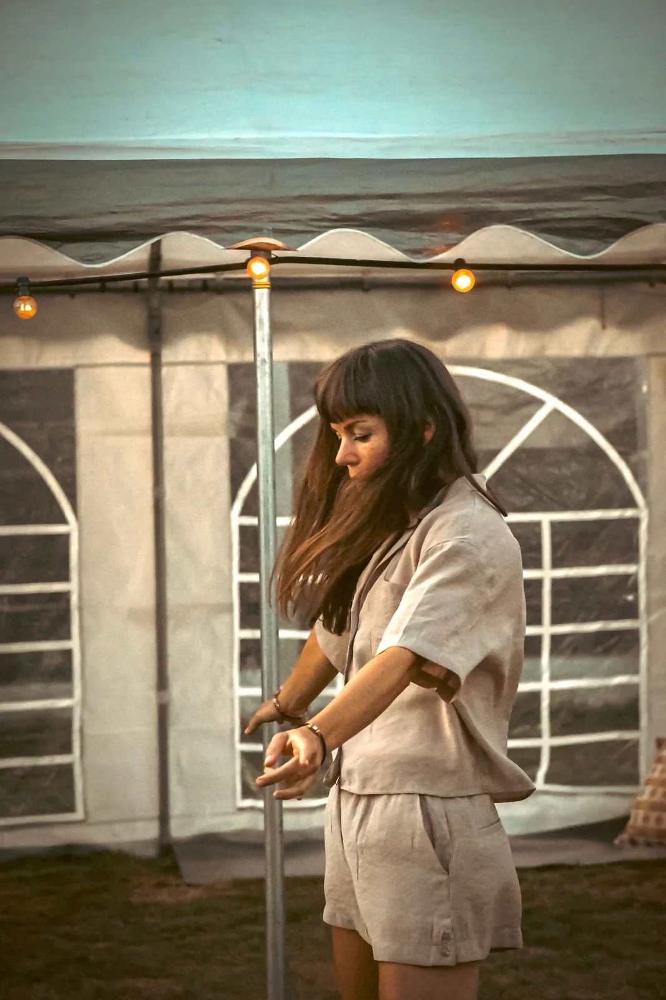

Sommige dingen vragen geen woorden. Ze willen gevoeld, bewogen, doorleefd en losgelaten worden.
“Your body holds what your mind cannot process.”
Gabor Maté
Twee wegen, één uitnodiging
Vind de vorm die nu bij je past.

01
Reiki
Rust. Ruimte. Herstel.
Een zachte energetische behandeling met aanraking, klank en geur. Een moment om spanning los te laten en opnieuw af te stemmen.
Learn more over Reiki
Binnen ANARAH krijgt Reiki diepgaande, zintuiglijke bedding. Klank en geur worden bewust ingezet om ontspanning, activatie en herstel te initiëren. Het fungeert als een poort naar herinnering en brengt je op een dieper niveau terug naar je essentie. Het is een innerlijke afstemming waarbij energie zich herschikt, blokkades verzachten en je opnieuw in verbinding komt met je ware kern.
“Healing isn’t about escape — it’s about reconnection. With ourselves. With meaning. With the sacred.”
Een begeleide reis met vrije beweging, adem en klank. Geen choreografie—jouw lichaam bepaalt het tempo.
Learn more over Somatic Dance
Dansen is zoveel meer dan beweging. In een universum waar alles stroomt, is dans voor mij een van de meest helende rituelen voor ons lichaam en zenuwstelsel. Het is niet iets wat we ‘doen’, maar iets dat door ons heen beweegt zodra we de weerstand opgeven.
ANARAH verweeft vrije beweging, ademhaling, klank en subtiele energetische afstemming tot ervaringen die je terugleiden naar de waarheid van je lichaam. Geen choreografie of performance. Het zijn begeleide innerlijke reizen waarin het lichaam zelf de weg wijst.
Met respect voor het tempo van het lichaam creëren we een veilige bedding om te vertragen, te voelen en te herinneren wie je bent onder de lagen van moeten, aanpassen en overleven. Een uitnodiging om thuis te komen in jezelf.
Ik ben Taïs. Met Reiki en Somatic Dance begeleid ik je zacht en helder, altijd op het tempo van jouw lichaam.
ANARAH ontstond vanuit het verlangen om een plek te creëren waar je niets hoeft te presteren. Een plek waar stilte, beweging en aandacht je terugbrengen naar jezelf.
“Je lichaam kent de weg. Ik help je om opnieuw te luisteren.”
Learn more over mijn begeleiding
Ik werk met het lichaam als poort naar een innerlijk weten dat geen woorden nodig heeft. Via bewuste beweging ontstaat er ruimte. Ruimte om te zijn, te ontladen en terug dichtbij jezelf te komen.
Tijdens een danssessie starten we met somatic practices om te zakken in het lichaam. Van daaruit dansen we vrij op melodic techno en ethno sounds, zodat wat zich aandient via ons lichaam gereguleerd en losgelaten kan worden.
Wat in beweging is gekomen, komt tot expressie. Zonder oordeel. Pure vrijheid. We sluiten af met een diepgaande meditatie en klankbad om het voorgaande proces te integreren.
Geen ervaring nodig. Enkel een open hart en een nieuwsgierige geest.
“Is it not a relief from suffering to be permitted to express it?”
Paul Cézanne
Samen bewegen
Events & gatherings
Een terugblik op onze gatherings. Nieuwe sessies en tickets vind je op Hipsy.

Eerdere editie
Into the Depths
Somatic Dance

Eerdere editie
End of Summer Festival
Festival

Eerdere editie
Surrender to Rise
Somatic Dance

Eerdere editie
Mankind Festival
De Schorre, Boom

Eerdere editie
Claim your Fire
Somatic Dance

Eerdere editie
Into the Waters
Somatic Dance

Eerdere editie
End of Summer Festival
Festival
Stories
Wat mensen voelden.
“Recht naar de essentie en kloppend op alle niveaus: de begeleiding, de muziek en de ruimte die je krijgt om te ontdekken wat je nodig hebt. Dit is vrijheid.”
AudreyInto the Waters · Somatic Dance
“Heerlijk gedanst om terug te verbinden en te herinneren, een speelse en diepgaande ervaring in een veilige bedding die verder draagt dan enkel het moment van muziek en beweging. Mijn lijf voelt terug een heelheid die ik al tijdje vergeten was. Dank je Taïs!”
EmilionSurrender to Rise · Somatic Dance
Lees meer ervaringen
“De laatste keer dat ik zo ontspannen was, had ik waarschijnlijk net het levenslicht gezien. Na deze sessie voelde ik me weer herboren!”
P. NelissenReiki
“Anarah heeft me voor de eerste keer kennis laten maken met de wereld van somatic dance. Hoewel het begin wat onwennig voelde, ebde dit langzaam weg door haar goede begeleiding. Er werd een open sfeer gecreëerd waar iedereen zichzelf kon zijn. Heel fijne ervaring die me achteraf de nodige rust bezorgde. Ik kijk al uit naar een volgend event!”
VirginieInto the Waters · Somatic Dance
“Ik volgde voor het eerst een sessie somatic dance, zonder echt te weten wat ik kon verwachten. Dankzij Tais voelde ik me al heel snel veilig en op mijn gemak. Met haar rustige en warme aanwezigheid nodigde ze me uit om uit mijn comfortzone te stappen, zonder dat het geforceerd aanvoelde. Al snel besefte ik dat er niets moest en niets verwacht werd. Gewoon bewegen, voelen en mijn lichaam laten leiden. Een heel bijzondere en bevrijdende ervaring.”
K. StokkaerClaim Your Fire · Somatic Dance
“I have been there, I loved it. Be there, you’re gonna love it. There is only love—take it, share it, and let it grow.”
AliInto the Waters · Somatic Dance
Let’s connect
Voelt dit als jouw moment?
Een vraag, een eerste sessie of gewoon even aftasten? Schrijf me. Ik lees persoonlijk mee en antwoord zo snel mogelijk.